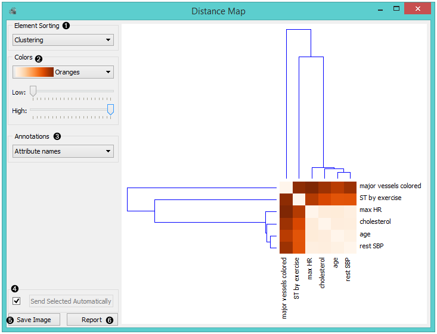
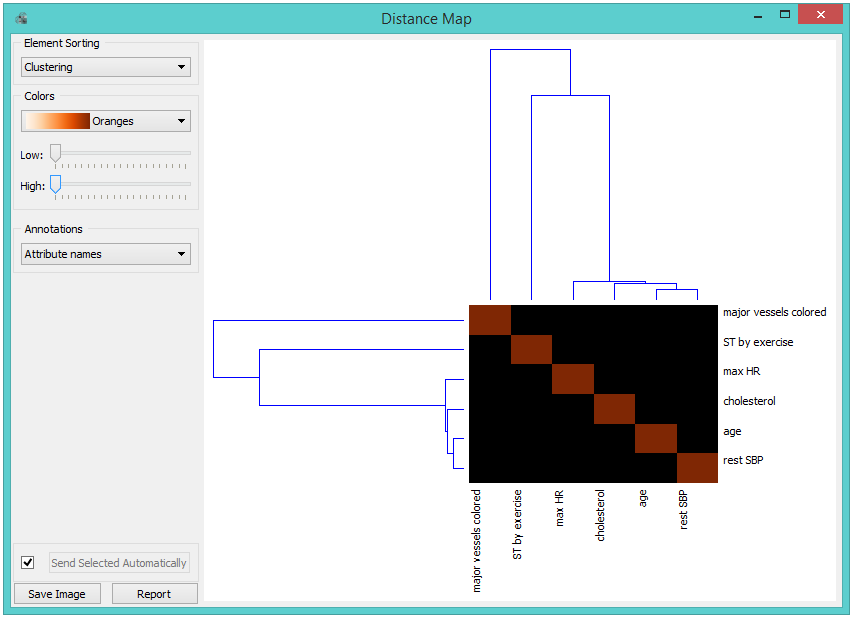
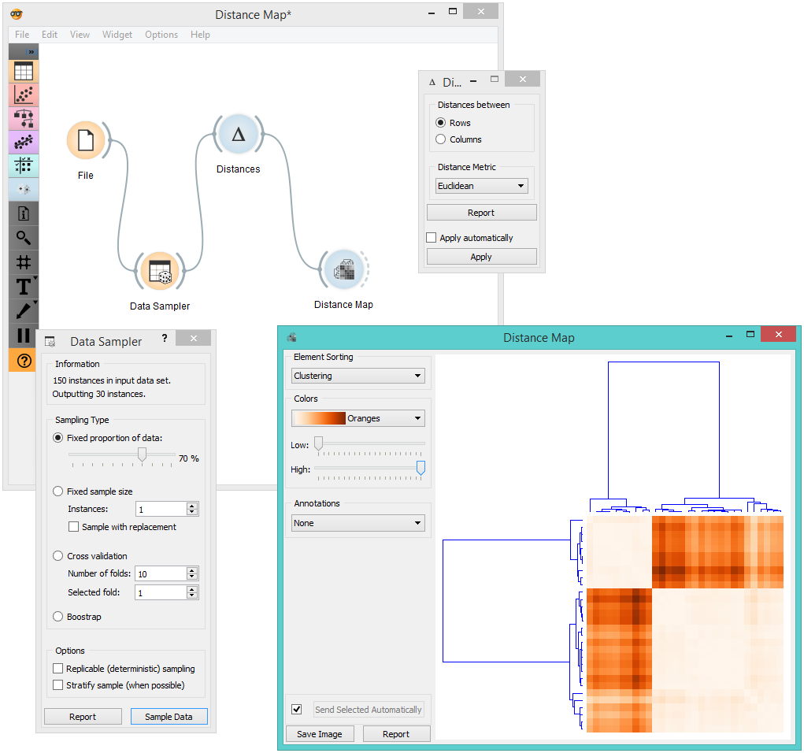
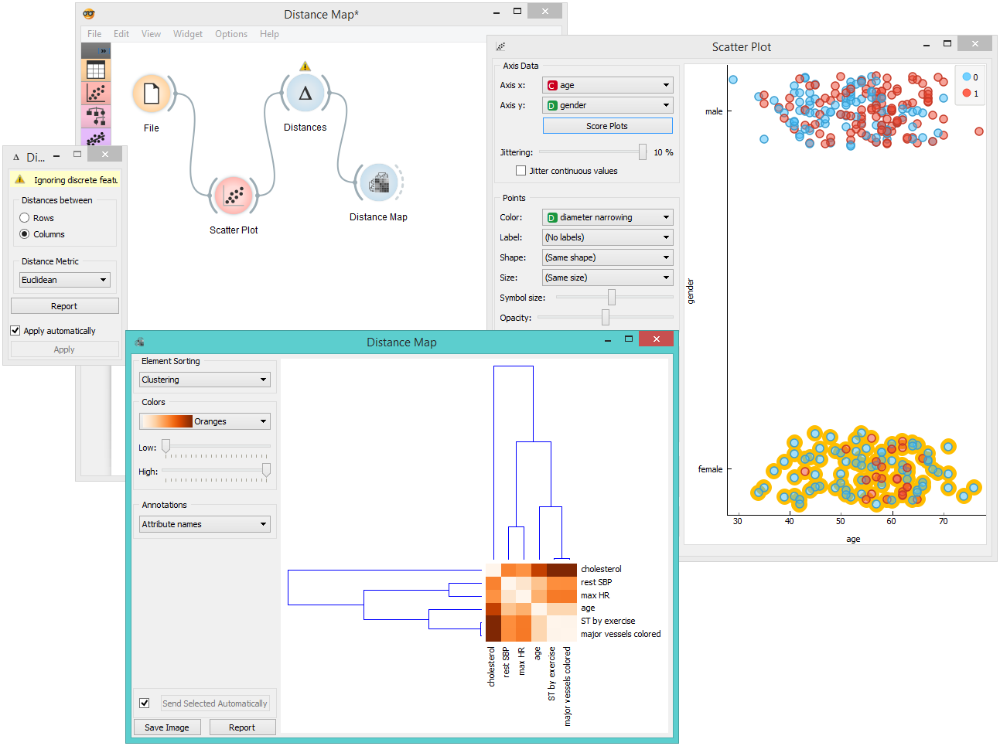

Distance Map
Visualizes distances between items.
Inputs
- Distances: distance matrix
Outputs
- Data: instances selected from the matrix
- Features: attributes selected from the matrix
The Distance Map visualizes distances between objects. The visualization is the same as if we printed out a table of numbers, except that the numbers are replaced by colored spots.
Distances are most often those between instances (”rows” in the Distances widget) or attributes (”columns” in Distances widget). The only suitable input for Distance Map is the Distances widget. For the output, the user can select a region of the map and the widget will output the corresponding instances or attributes. Also note that the Distances widget ignores discrete values and calculates distances only for continuous data, thus it can only display distance map for discrete data if you Continuize them first.
The snapshot shows distances between columns in the heart disease data, where smaller distances are represented with light and larger with dark orange. The matrix is symmetric and the diagonal is a light shade of orange - no attribute is different from itself. Symmetricity is always assumed, while the diagonal may also be non-zero.

- Element sorting arranges elements in the map by
- None (lists instances as found in the dataset)
- Clustering (clusters data by similarity)
- Clustering with ordered leaves (maximizes the sum of similarities of adjacent elements)
- Colors
- Colors (select the color palette for your distance map)
- Low and High are thresholds for the color palette (low for instances or attributes with low distances and high for instances or attributes with high distances).
- Select Annotations.
- If Send Selected Automatically is on, the data subset is communicated automatically, otherwise you need to press Send Selected.
- Press Save Image if you want to save the created image to your computer.
- Produce a report.
Normally, a color palette is used to visualize the entire range of distances appearing in the matrix. This can be changed by setting the low and high threshold. In this way we ignore the differences in distances outside this interval and visualize the interesting part of the distribution.
Below, we visualized the most correlated attributes (distances by columns) in the heart disease dataset by setting the color threshold for high distances to the minimum. We get a predominantly black square, where attributes with the lowest distance scores are represented by a lighter shade of the selected color schema (in our case: orange). Beside the diagonal line, we see that in our example ST by exercise and major vessels colored are the two attributes closest together.

The user can select a region in the map with the usual click-and-drag of the cursor. When a part of the map is selected, the widget outputs all items from the selected cells.
Examples
The first workflow shows a very standard use of the Distance Map widget. We select 70% of the original Iris data as our sample and view the distances between rows in Distance Map.

In the second example, we use the heart disease data again and select a subset of women only from the Scatter Plot. Then, we visualize distances between columns in the Distance Map. Since the subset also contains some discrete data, the Distances widget warns us it will ignore the discrete features, thus we will see only continuous instances/attributes in the map.
